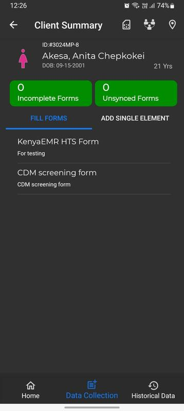
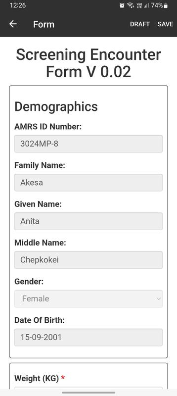

Remplir des formulaires pour un patient
Assurez-vous d'avoir téléchargé le formulaire approprié à partir du serveur avant de remplir le formulaire pour
le patient. Sinon, rendez-vous sur la page des formulaires. Accédez à l'onglet EN LIGNE qui listera tous les formulaires
disponible sur le serveur. Sélectionnez le formulaire souhaité, puis téléchargez-le.
Une fois que vous avez réussi à télécharger le formulaire, revenez à la page d'accueil. Suivez ensuite les étapes suivantes :
- Cliquez sur le nom du patient de votre choix dans la liste des patients.
- Sélectionnez le formulaire approprié. C'est-à-dire celui que vous avez téléchargé dans l'onglet REMPLISSAGE DE FORMULAIRE
dans le menu Collecte de données sur la page de résumé du patient.

- Ce formulaire pré-remplira les données du profil du patient.
- Remplissez le formulaire pour le patient.
- Enregistrer et synchroniser le formulaire sur le serveur.
Remarque : Les champs des formulaires marqués d'un astérisque doivent être remplis pour que le formulaire soit enregistré comme brouillon ou complet.
Exemple. Formulaire de rencontre de dépistage v 0.02
